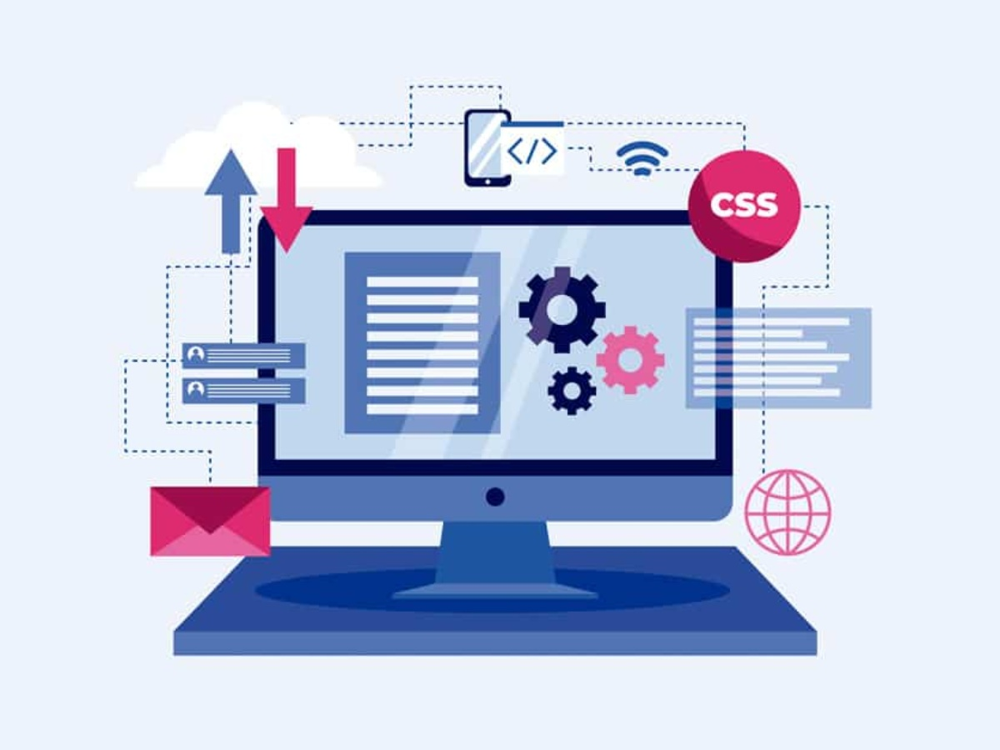

O Desenvolvedor de Software é o profissional responsável por criar, testar, atualizar e manter programas, aplicativos e sistemas que usamos no dia a dia, como aplicativos de delivery, bancos digitais e redes sociais.
Entre as principais atividades estão: escrever códigos, resolver problemas técnicos, trabalhar em equipe, fazer testes e atualizar sistemas existentes.
No Brasil, grandes empresas como Nubank, iFood, Mercado Livre, Stone, XP Inc, Magazine Luiza, Google, Microsoft, CI&T, TOTVS e diversas startups estão sempre contratando desenvolvedores.